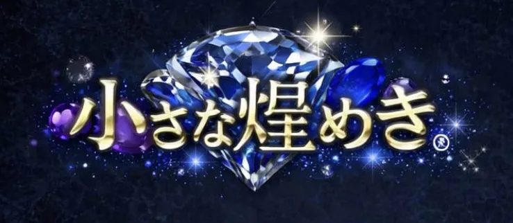
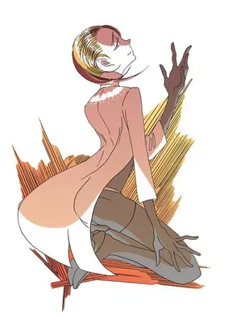

私が宝石を好きになったきっかけは、アニメ『宝石の国』という作品に出会ったことでした。
キャラクターたちの繊細な輝きや、宝石としての個性が物語の中で息づいている姿に心を奪われ、
そこから本物の宝石にも興味を持つようになりました。お気に入りのキャラは上の写真の人物。（ルチルクォーツ）
集めている宝石は、特に緑系のものが多いです。
産地や形に強いこだわりはありませんが、手のひらに乗せたときに
「この子が好きだ」と思えるかどうかを大切にしています。
宝石を見ていると、角度や光の入り方によって色彩が変化したり、
オパールや真珠のように遊色効果がふわりと浮かび上がったりする瞬間があります。
その一瞬の美しさに触れるたび、宝石はただの“石”ではなく、
小さな世界を閉じ込めた特別な存在だと感じます。
このオリジナルWebサイトの課題を通じて、
自分のお気に入りの宝石たちをひとつの形としてまとめたいと思いました。
写真や言葉を通して、私が感じている美しさや魅力を
少しでも誰かと共有できたら嬉しいです。